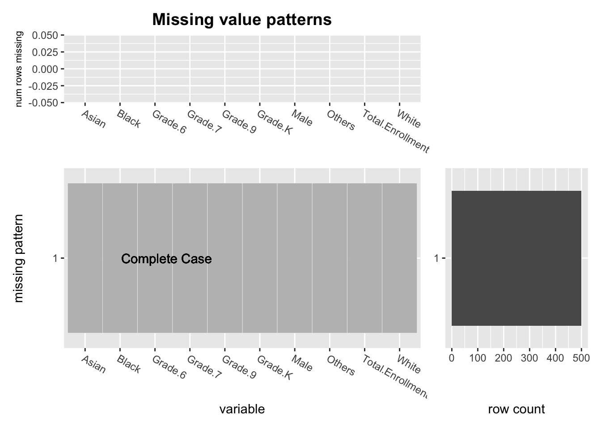
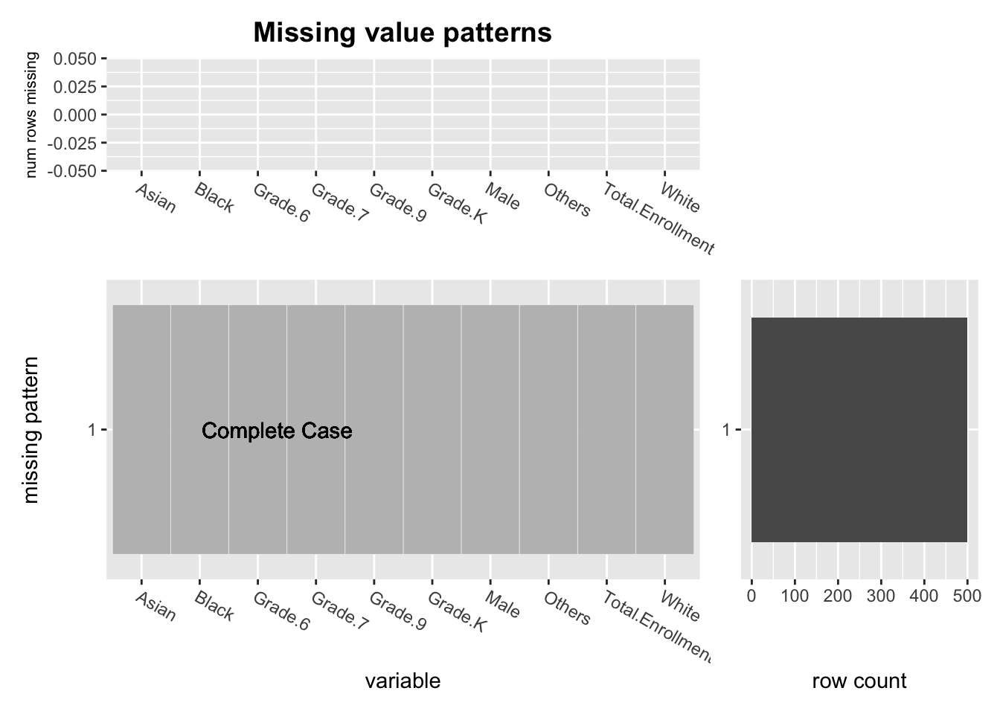

Chapter 4 Missing values
4.1 Checking Missing Values
## [1] "After looping over all numerical variables, there's 0 NA values"The data consist of different data types of parameters: numeric and character. For numerical variables, such as number of Asian student, number of Hispanic student, etc. a value of 0 is acceptable, since there might not be any student that belongs to that specific ethnic group, so we checked if there are any NA values in all variables that are numeric. It turned out that the data is pretty complete since there are no NA values for all numeric type variable.
4.2 Checking Inconsistent Values
For character type variables, such as the Economic.Need.Index that represents numerical values in character format, we checked for missing values by converting the column of values to numeric after removing the % sign after the number. If there is no missing values, we should expect all values being converted to numbers. However, the conversion led to NA values for all observations, which indicate existence of values that are not NA but does not conform to the labeling format (i.e. string with number of percentages).
Thus, to check for inconsistent values, we first mutate the Economic.Need.Index column by converting values that does not follow the format of "numerical value %" into NA.
inconsistent <- school %>%
mutate(Economic.Need.Index.new =
ifelse(str_detect(Economic.Need.Index, "^[\\d]+%"), NA,
as.numeric(str_extract(Economic.Need.Index, "^[\\d]+")))) %>%
select(-c(DBN, X..Female.1, X..Male.1, X..Asian.1, X..Black.1, X..Hispanic.1,
X..Multiple.Race.Categories.Not.Represented.1, X..White.1,
X..Students.with.Disabilities.1, X..English.Language.Learners.1,
X..Poverty.1, is_preschool, is_elementary, is_middle, is_high)) %>%
select_if(is.numeric) %>%
rename(Female = X..Female, Male = X..Male, Asian = X..Asian, Black = X..Black,
Hispanic = X..Hispanic, Others = X..Multiple.Race.Categories.Not.Represented,
White = X..White, Disabled.Students = X..Students.with.Disabilities,
English.Learners = X..English.Language.Learners, Poverty = X..Poverty)
print(paste0("The number of NAs, which was originally represented as No Data is ",
sum(is.na(inconsistent$Economic.Need.Index.new)),
" among the total of ",
length(inconsistent$Economic.Need.Index.new), " observations"))## [1] "The number of NAs, which was originally represented as No Data is 1718 among the total of 8590 observations"As indicated in the R output, there are 1718 missing values in the Economic.Need.Index alone.
4.3 Missing Pattern plot
Given the shear size of the dataset, it is hard to visualize missing value pattern of the whole dataset, thus, we can sample from the whole data set and visualize the missing pattern:
 

After trying few cases of missing pattern combinations, it is really rare to find a case that have a pattern. This is because that the data itself has a really large size, which is 8972 rows by 39 columns, while there’s only 1730 missing entries, with a missing value rate less than 0.5%. From the missing pattern plots, we can see that all the numerical columns except for Economic.Need.Index are complete. The missing values in Economic.Need.Index is not worrisome to us because Poverty parameter describes the same thing as Economic.Need.Index. So, we decided to completely remove the Economic.Need.Index column during further analysis, and use the complete Poverty column to represent economic statuses of the students.